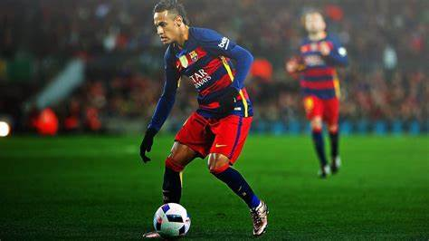

Información Personal

Nombre completo: Neymar da Silva Santos Júnior
Fecha de nacimiento: 5 de febrero de 1992
Edad: 33 años (2025)
Lugar de nacimiento: Mogi das Cruzes, Brasil
Altura: 1.75 m
Posición: Delantero
Nacionalidad: Brasileña
Redes Sociales: Neymar tiene más de 250 millones de seguidores combinados en plataformas como Instagram, Twitter y Facebook.
Trayectoria Profesional
Neymar ha tenido una carrera excepcional, jugando en algunos de los clubes más importantes del mundo y siendo clave en cada equipo. Su habilidad, visión de juego y capacidad para marcar goles le han permitido destacar tanto a nivel de clubes como en la selección nacional.
- Santos FC (2009-2013) - Ganó la Copa Libertadores en 2011, lo que catapultó su fama internacional. Su estilo de juego atractivo le permitió ser comparado con grandes íconos brasileños como Pelé.
- FC Barcelona (2013-2017) - En Barcelona, formó parte del famoso tridente MSN junto a Messi y Suárez, logrando múltiples títulos, incluida la Champions League de 2015. Su éxito en la liga española consolidó su estatus como uno de los mejores jugadores del mundo.
- Paris Saint-Germain (2017-2023) - Neymar rompió el mercado de transferencias con un fichaje récord de 222 millones de euros. Con el PSG, ganó 5 Ligas de Francia, y fue vital en la clasificación de su equipo a la final de la Champions League 2020.
- Al-Hilal (2023-2025) - En 2023, Neymar decidió dar un giro a su carrera al mudarse a la liga saudí, uniéndose al Al-Hilal. Aquí, continuó demostrando su gran capacidad para adaptarse y mantener su nivel de alto rendimiento.
Títulos y Logros
- 1 Champions League (2014-15)
- 5 Ligas de Francia con PSG
- 2 Ligas de España con Barcelona
- 1 Copa Libertadores con Santos (2011)
- 3 Copas del Rey con Barcelona
- 2 Supercopas de España
- Medalla de Oro en los Juegos Olímpicos de 2016
- Campeón de la Copa Confederaciones 2013 con Brasil
- Máximo goleador histórico de la selección brasileña (superando a Pelé en 2023)
- Numerosos Premios individuales como el Mejor Jugador de América (2012) y el Mejor Futbolista de la Ligue 1.
Últimas Noticias (2025)
En 2025, Neymar sigue siendo una de las figuras más destacadas del fútbol mundial. Se rumorea sobre su posible regreso a Brasil o su incursión en la Major League Soccer (MLS). Además, Neymar ha anunciado su intención de jugar su última Copa del Mundo en 2026, marcando el final de una era dorada con la selección brasileña.
"Mi objetivo es darlo todo hasta el final y terminar mi carrera como campeón del mundo. El fútbol me ha dado todo, pero la última meta siempre será la Copa del Mundo." - Neymar Jr.
Estilo de Juego
Neymar es conocido por su increíble habilidad con el balón, su regate rápido, y su capacidad para desequilibrar defensas. Es un jugador versátil que se destaca en el uno contra uno, así como en la creación de jugadas. Su visión de juego le permite asistir a sus compañeros y marcar goles desde cualquier posición en el campo.
Vida Personal
Aparte de su éxito en el fútbol, Neymar también es una figura mediática. Su vida personal es seguida por millones de fans alrededor del mundo. Es padre de un hijo, Davi Lucca, y ha sido conocido por su generosidad, apoyando causas benéficas en Brasil y colaborando en diversas iniciativas para la juventud.
Fuera del campo, Neymar ha invertido en varios proyectos, incluidos una marca de ropa, su propia línea de calzado y una empresa de eSports, además de crear contenido en redes sociales que lo ha convertido en una de las figuras más influyentes del mundo.
Curiosidades
- Debutó como profesional con solo 17 años en el Santos FC.
- Es el máximo goleador histórico de la selección brasileña con más de 80 goles.
- Ha sido portada de múltiples videojuegos como FIFA y PES.
- Cuenta con una fortuna estimada en más de 250 millones de dólares.
- En 2021, Neymar superó a Pelé en la lista de máximos goleadores históricos de Brasil.
- Ha sido un embajador global de marcas de alto perfil como Nike, Red Bull y Puma.